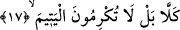

Sûfî fakirlikten gam ve kedere düşünce
Bu fakrı onun bakıcısı ve besini olur
Zira Cennet zorluklardan filizlenir
Şefkat ve merhamet kırılmış âcizin nasibidir.
Üstünlük taslayıp başları ezen kimseye
Hakk’ın da halkın da merhameti erişmez.
Nitekim büyüklerden birisi “Rabbim beni önemsemedi der” âyeti hakkında şöyle
demiştir: Yâni Rabbim beni değersiz ve zelil bıraktı, der. Bu zavallı ve gözü perdeli
kişi bilmez ki Rabbı ona rahmet ve şefkat nazariyle bakmaktadır. Çünkü onu
rahmâniyyet cezbesi ile tabîî âlemden çekip rûhânî âleme, nefis âleminden kalp
âlemine, fark âleminden cem‘ âlemine, firak âleminden visâl âlemine cezbetmiştir.
17. Hayır! Doğrusu siz yetime ikram etmiyorsunuz,
“Hayır!” Bu kelime önceki âyetlerde aktarılan insanın sözlerinden onu vazgeçirme ve
her iki sözünü de yalanlama anlamı taşımaktadır.
İbn Abbâs (r.a.) der ki: Âyetin mânâsı şöyledir: Ben nezdimde değerli olduğu için
insanı zenginlikle imtihan etmedim. Yine katımda değersiz olduğu için fakirlikle imtihan
etmedim. Bilakis bunlar sebeplere bağlı olmaksızın sâdece bir kaza ve kaderden
ibârettir.
“Doğrusu siz yetime ikram etmiyorsunuz” Bu ifâdeyle insanın kötü sözlerinin beyân
edilmesinin ardından kötü fiillerini açıklamaya geçiş ifâdesidir. Burada muhâtap
siygasına dönülmesi, insanoğlunun ağzından çıkan yukardaki sözüyle işlemiş olduğu
cinâyeti görmesi gerektiğine işâret etmek ve şiddetli bir biçimde onu azarlamak, yapmış
olduğu fiilin ve söylediği sözün çok çirkin olduğunu ifâde etmek içindir.
“Siz” şeklinde çoğul bir ifâdenin kullanılması “insan” kelimesinin mânâsı göz önüne
alındığı içindir. Çünkü maksad insan cinsidir.
Yâni bilakis sizin yukarda sayılandan çok daha beter ve dünya malına dört elle
sarıldığınızı daha fazla gösteren durumlarınız var. Çünkü Allah size çok mal vererek
ikramda bulunuyor ama siz nafaka, giyim-kuşam vb. yetime ikram yükümlülüğünüzü
yerine getirmiyorsunuz.
Yetim, babasını kaybeden ve henüz erginlik çağına erişmemiş çocuk demektir.
Hayvanların yetimi ise annesini kaybeden hayvan demektir. Peygamber (s.a.) Efendimiz
yetim hakkında şöyle buyurur: “Evlerin Allah’a en sevimlisi içinde kendisine ikram
edilen yetimin bulunduğu evdir.”